리눅스마스터-1급 (2002-08-31 기출문제)
1과목: 리눅스 실무의 이해
1. 시분할(Time-Sharing) 운영체제에 대한 특징으로 틀린 것은?
- 여러 개의 프로그램을 주기억장치에 적재한다.
- 여러 프로세스가 CPU를 나누어 사용한다.
- 단위 시간당 프로세스 처리량이 늘어난다.
- 사용자 입장에서는 평균적인 응답시간이 향상된다.
(정답률: 30%)
2. 운영체제의 유형 중 작업 처리의 지연 없이 즉각적으로 처리하는 형태를 말하는 것은?
- 단일 태스킹(Single-tasking)
- 다중 태스킹(Multi-tasking)
- 실시간 처리(Real Time Processing)
- 가상 기계(Virtual Machine)
(정답률: 80%)

3. GPL이 표방하는 자유와 관계가 적은 것은?
- 어떠한 목적을 위해서라도 프로그램을 실행할 수 있는 자유
- 프로그램의 작동원리를 연구하고, 이를 자신의 필요에 맞게 변경시킬 수 있는 자유
- 프로그램을 향상시키고 이를 전체의 이익을 위해 다시 환원시킬 수 있는 자유
- 프로그램을 복제하고 배포하여 정당한 이익을 취할 수 있는 자유
(정답률: 82%)
4. 다음 중 배포판의 종류라고 할 수 없는 것은?
- Red Hat
- Gnome
- Debian
- Mandrake
(정답률: 58%)
5. 리눅스의 배경으로 틀린 것은?
- 라이센스로 GPL을 사용한다.
- Minix를 모델로 개발되었다.
- 소스를 볼 수는 있지만 마음대로 고칠 수는 없다.
- Linus Torvalds가 커널을 개발했다.
(정답률: 88%)
6. 다음 중 주변장치 인터페이스에 속하지 않는 것은?
- SCSI(Small Computer System Interface)
- API(Application Program Interface)
- IDE(Integrated Drive Electronics)
- PCI(Peripheral Component Interconnect)
(정답률: 72%)
7. 다음은 ext2 파일 시스템의 슈퍼블록(Super Block)에 대한 내용이다. 빈칸에 들어갈 내용으로 올바른 것은?
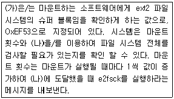
- (가) : 개정 레벨, (나) : 블록 그룹 번호
- (가) : 개정 레벨, (나) : 최대 마운트 횟수
- (가) : 매직 넘버, (나) : 블록 그룹 번호
- (가) : 매직 넘버, (나) : 최대 마운트 횟수
(정답률: 59%)
8. LILO의 설정파일인 lilo.conf의 내용 중 부팅 디폴트 라벨을 바꾸기 위해 수정해야 하는 항목은?
- Boot
- Default
- Label
- Map
(정답률: 50%)
9. X protocol에 관한 설명으로 알맞은 것은?
- X 윈도우에서 응용 프로그램을 실행하기 위한 자원을 제공한다.
- 응용 프로그램의 수행 결과를 출력 장치에 표시하는 역할을 한다.
- X 서버와 X 클라이언트 사이의 통신에 이용되는 기본 메시지이다.
- 화면에 그림을 그리고 마우스에 반응하는 등의 기능을 한다.
(정답률: 73%)
10. X 윈도우 시스템에 대한 설명으로 알맞지 않은 것은?
- 모든 종류의 에플리케이션과 유틸리티에 대해, GUI를 사용할 수 있는 기본 플랫폼을 제공하는 클라이언트/서버 시스템이다.
- X 윈도우 시스템은 1984년 Athena 프로젝트의 일환으로 MIT에서 최초로 개발되었다.
- 클라이언트/서버, X protocol, Xlib, Xtoolkit 등의 구성요소로 이루어져 있다.
- KDE, GNOME, Window Maker, fvwm 등이 대표적인 윈도우 매니저이다.
(정답률: 50%)
11. 메타 문자를 사용한 명령 rm [A-Z]?[0-9]에 의해 삭제되는 파일은?
- A9
- A09
- AZ09
- AZ509
(정답률: 32%)
12. 하위 디렉토리 개수를 표시해 주는 명령은?
- ls -dir
- ls -F | grep / | wc -l
- ls -l | grep "^d" | wc -c
- ls --color=blue | wc -l
(정답률: 24%)
13. "시스템 부팅 과정의 마지막에 수행되어 /etc/inittab 파일을 읽어 시스템의 런 레벨(Run Level)을 결정한다." 다음은 어떤 명령어에 대한 설명인가?
- halt
- runlevel
- init
- nice
(정답률: 56%)
14. 스케줄링에 대한 설명으로 알맞지 않은 것은?
- SPN(Shortest Job First) 스케줄링은 준비 상태에 있는 프로세스들 중에서 총 실행 시간이 가장 짧은 프로세스부터 스케줄링하는 기법으로, 시스템 내에 대기하는 프로세스들의 수를 최소화할 수 있다는 장점이 있다.
- 비선점 스케줄링 기법은 수행중인 프로세스가 스스로 자원을 반납할 때까지 프로세서를 포함한 모든 할당된 자원의 소유권을 계속 유지시키는 것으로, 응답 시간의 예측이 용이하지 못하다는 단점이 있다.
- FIFO(First In First Out) 스케줄링은 가장 간단한 스케줄링 기법으로서, 일단 하나의 프로세스가 프로세서를 차지하면 그 프로세스가 완료 될 때까지 실행되는 비선점 방식의 스케줄링 기법이다.
- RR(Round-Robin) 스케줄링 기법은 선점기법으로 구현한 스케줄링 방법으로서, 대화식 시분할 시스템이나 다중 사용자 시스템에 적합하다.
(정답률: 7%)
15. 프로세스 관련 설명으로 틀린 것은?
- PID는 프로세스를 구분하는 번호로 커널에서는 멀티태스킹 작업에 이용된다.
- 프로세스의 상태는 크게 활동상태(Active)와 지연상태(Suspended)로 나뉜다.
- PCB는 /proc 영역에 위치하며 프로세스 정보를 유지한다.
- 시스템의 성능을 높이기 위해서는 효율적인 스케쥴링이 필요하다.
(정답률: 47%)
16. OSI 7 계층(Layer) 중 데이터가 목적지까지 올바르게 도달할 수 있도록 경로 선택 및 라우팅 기능을 수행하는 계층은?
- 물리 계층
- 데이터 링크 계층
- 네트워크 계층
- 전송 계층
(정답률: 66%)
17. 네트워크 용어에 대한 설명 중 옳은 것은?
- Token Ring : 10Mbps이상의 속도를 보장하는 고속 데이터망으로, 노드(Node)가 늘어나면 속도 저하가 심하게 일어나는 단점이 있다.
- WAN : 근거리 통신망이 여러 개 모여 이루어진 고속 전송이 가능한 전용 회선으로, 각 노드간의 연결은 지점간 접속(Point to Point) 방식을 사용한다.
- Ethernet : 4∼16Mbps의 전송 속도를 지니며, 노드(Node)가 늘어나더라도 속도 저하가 거의 없는 것을 장점으로 한다.
- ISDN : 디지털 데이터를 53 바이트씩 나누어, 디지털 신호 기술을 사용한 매체를 통하여 전송하는 전용접속 스위칭 기술이다.
(정답률: 30%)
18. 로컬 호스트에서 192.168.0.1과 같은 IP 주소를 이용하면 타 호스트에 접근할 수 있지만, e x a m .ih d .o r .k r과 같은 호스트 이름으로는 접근할 수 없을 경우 고쳐주어야 할 파일로 가장 알맞은 것은?
- /etc/services
- /etc/sysconfig/networks
- /etc/identd.conf
- /etc/resolv.conf
(정답률: 62%)
19. ifconfig 명령에 대한 설명으로 틀린 것은?
- 네트워크 인터페이스의 네트워크 설정을 할 수 있다.
- ifconfig 명령에 의한 설정은 재부팅 시 다시 적용되지 않는다.
- IP Address, MAC Address, Netmask 등을 설정할 수 있다.
- 루트 권한으로만 사용 가능하다.
(정답률: 18%)
20. 다음은 ifconfig 명령으로 알아본 eth1의 정보이다. 이에 대한 해석으로 알맞지 않은 것은?
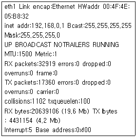
- 보낸 패킷의 수는 32919 이고, 받은 패킷의 수는 17360 이다.
- MAC Address는 00:4F:4E:⑤:B8:32 이고, IP Address는 192.168.0.1 이다.
- eth1이 사용하는 I/O Address는 0xf00이고, IRQ는 5이다.
- NetMask는 255.255.255.0 이다.
(정답률: 43%)
2과목: 리눅스 시스템 관리
21. 다음은 어떤 명령어의 manual page 내용 중 일부분이다. 아래 내용에 적합한 명령어는?
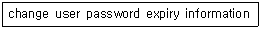
- chmod
- chage
- chown
- chgrp
(정답률: 78%)
22. 리눅스 시스템의 보안 정책 중 /etc/passwd 파일의 취약점을 보완하기 위해 사용되는 파일은?
- /etc/shadow
- /etc/group
- /etc/login
- /etc/su
(정답률: 74%)
23. 다음 중 슈퍼 유저인 root 가 사용자 패스워드를 알아낼 수 있는 방법은?
- /etc/passwd 파일을 확인한다.
- /etc/shadow 파일을 확인한다.
- passwd 명령어를 사용한다.
- 사용자 패스워드를 알아낼 방법이 없다.
(정답률: 50%)
24. 아래와 같은 명령이 root에 의해 실행된 후, 생성된 ihd 사용자에 대한 설명으로 틀린 것은?
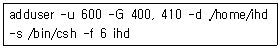
- UID는 600 이며, GID가 400, 410 인 그룹에 속하게 된다.
- 홈 디렉토리는 /home/ihd 이다.
- 로그인 후 기본적으로 사용될 쉘은 csh 이다.
- ihd 계정은 발급된 후, 6일이 지난 이후부터 사용 가능하다.
(정답률: 55%)
25. /etc/skel 디렉토리가 아닌 /root/skel 디렉토리의 환경설정 파일들을 이용하여 ihd 라는 계정을 생성하려고 한다. 이 때 사용할 명령으로 알맞은 것은?
- adduser -m -k /root/skel ihd
- adduser -c /root/skel ihd
- adduser -e /root/skel ihd
- /etc/skel 디렉토리 이외의 것은 환경 설정으로 사용할 수 없다.
(정답률: 27%)
26. 명령어의 사용법과 의도가 잘못 기술된 것은?
- mkfs -t ext2 /dev/fd0 1440 : 플로피상에 ext2 파일시스템을 만든다.
- fsck -t ext2 /dev/hda2 : /dev/hda2 상의 ext2 파일시스템을 점검한다.
- mkswap -c /swap 8192 : /swap이라는 이름으로 8KB의 스왑(Swap) 공간을 만든다.
- mount -t iso9660 -r /dev/cdrom /mnt : CD-ROM 드라이브를 /mnt에 마운트 한다.
(정답률: 38%)
27. 속성이 아래와 같은 파일에 chmod 644 a.out 과 chown ihd a.out 명령을 연속적으로 실행 했을 때, 변경된 속성으로 알맞은 것은?
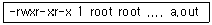
- -rw-r--r-- 1 ihd root .... a.out
- -rwxrw-rw- 1 ihd root .... a.out
- -rw-r--r-- 1 ihd ihd .... a.out
- -rwxrw-rw- 1 ihd ihd .... a.out
(정답률: 50%)
28. quota 설정 시 각 사용자가 사용할 수 있는 최대 용량을 가리키며, 유예기간(grace period)까지는 사용 용량 초과에 대하여 경고를 받게 되는 경계선 역할을 하는 옵션은 무엇인가?
- soft limit
- hard limit
- grace period
- quota limit
(정답률: 34%)
29. 다음 중 fsck 명령어가 검사하지 않는 항목은?
- Check Blocks and Sizes
- Check Pathnames
- Check Connectivity
- Check Filenames
(정답률: 42%)
30. 마운트하여 사용하던 CD-ROM을 언마운트 하였더니 아래와 같은 메시지가 출력되었다. 이에 대한 원인으로 적합한 것은?
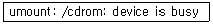
- CD-ROM 안에 기록되어 있는 파일이 일부 손상되었기 때문이다.
- CD-ROM 드라이브를 커널에서 지원하지 않기 때문이다.
- CD-ROM 드라이브 안에 CD가 들어있지 않아서 나타나는 메시지이다.
- CD-ROM을 사용중인 프로세스가 있기 때문이다.
(정답률: 79%)
31. ps -u 명령에 의해 화면에 출력된 필드들에 대한 설명으로 틀린 것은?
- RSS : 실제 메모리 사용량
- %MEM : 메모리 사용비율
- STAT : 프로세스의 우선 순위
- START : 프로세스가 시작한 시간
(정답률: 50%)
32. inittab 파일은 id:run-levels:action:process 와 같은 일정한 형식을 가지고 있다. 이 중 action 조건에 올 수 있는 설정에 대한 설명으로 알맞지 않은 것은?
- wait : 프로세스를 실행한 후 다음 줄의 엔트리로 가지말고, 실행한 프로세스가 종료될 때까지 기다리라는 의미이다.
- respawn : 실행중인 프로세스가 종료되면 다시 실행시키라는 의미로, 주로 getty 등의 프로세스들이 이에 해당한다.
- initdefault : 디폴트 실행수준을 지정하겠다는 의미이다.
- off : 실행중인 프로세스라면 실행하지 말고, 실행되고 있지 않다면 단지 한번만 실행 시키라는 의미이다.
(정답률: 67%)
33. ps -ax 명령 실행 시 TTY 필드에 출력된 ? 문자의 의미로서 가장 알맞은 것은?
- 텔넷으로 접근한 프로세스임을 의미한다.
- 로그인 전에 init 프로세스에 의해 실행되어 터미널을 할당받지 못한 프로세스임을 의미 한다.
- 좀비 프로세스임을 의미한다.
- 아직 실행중이나 곧 종료될 프로세스임을 의미한다.
(정답률: 56%)
34. Run Level에 관한 설명으로 적절하지 못한 것은?
- Run Level 0 : shutdown -h now 명령으로 진입하게 된다.
- Run Level 2 : 다중 사용자 모드로 NFS를 지원한다.
- Run Level 3 : 다중 사용자 모드로 텍스트 콘솔로 로그인을 하며, 각종 네트워크 서비스가 가능하다.
- Run Level 5 : Run Level 3과 동일한 기능을 하며, Windows 계열 운영체제처럼 GUI 환경으로 로그인하게 된다.
(정답률: 75%)
35. 프로세스의 실행과 관련된 설명으로 옳지 못한 것은?
- 백그라운드로 실행되고 있는 프로세스는 중지시킬 수 없다.
- 프로세스가 포그라운드로 실행되는 동안은 터미널에서 입력 작업을 할 수 없다.
- 프로세스를 백그라운드로 실행시키려고 할 때에는 명령의 끝에 메타 문자인 '&' 를 추가한다.
- 포그라운드로 실행되고 있는 프로세스는 Ctrl+C나 kill 명령으로 중지시킬 수 있다.
(정답률: 65%)
36. 다음 중 C 프로그램의 #define 지시어의 처리와 관련이 있는 것은?
- /usr/lib/gcc-lib/i386-linux/2.7.2.1/cc1
- /usr/lib/gcc-lib/i386-linux/2.7.2.1/cpp
- /usr/lib/gcc-lib/i386-linux/2.7.2.1/libgcc.a
- /usr/lib/gcc-lib/i386-linux/2.7.2.1/specs
(정답률: 46%)
37. tar cvfz total.tar.gz * 명령의 의미를 가장 잘 설명한 것은?
- 현재 디렉토리의 모든 파일을 total.tar.gz 이름으로 묶음과 동시에 압축을 실행한다.
- total.tar.gz 파일을 현재 디렉토리에 푼다.
- 현재 디렉토리의 모든 파일을 total.tar.gz 이름으로 묶는다.
- total.tar.gz 파일을 * 이름으로 압축한다.
(정답률: 50%)
38. 다음은 makefile 파일의 내용 중 일부이다. make 명령어를 실행했을 때 실행되지 않는 부분은?
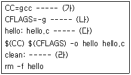
- (가)
- (나)
- (다)
- (라)
(정답률: 38%)
39. rpm 명령을 이용하여 ftp서버(192.168.0.1)의 /pub 디렉토리에 있는 mc-4.5.42-10.i386.rpm 패키지를 설치하고자 한다. 이 때 사용할 명령으로 올바른 것은?
- rpm -f ftp://192.168.0.1/pub/mc-4.5.42-10.i386.rpm
- rpm -t ftp://192.168.0.1/pub/mc-4.5.42-10.i386.rpm
- rpm -i ftp://192.168.0.1/pub/mc-4.5.42-10.i386.rpm
- rpm -ftp ftp://192.168.0.1/pub/mc-4.5.42-10.i386.rpm
(정답률: 44%)
40. 커널 컴파일 과정에서 사용되는 명령과 이에 대한 설명으로 적절하지 못한 것은?
- make mrproper : 기존의 커널 설정 값을 초기화 시킨다.
- make dep : 의존성을 검사하는 명령으로, 컴파일 할 파일과 하지 않을 파일을 결정한다.
- make clean : 이전 컴파일 시 생성된 오브젝트 파일과 이전 버전 커널이 남겨놓은 것들을 삭제한다.
- make install : 커널 이미지를 생성 시켜주는 명령으로, 완료 후 반드시 lilo 명령을 수동으로 실행 시켜주어야 한다.
(정답률: 57%)
41. 다음은 /etc/printcap 파일의 변수에 대한 설명이다. (가)-(나)-(다)에 들어갈 변수명으로 옳게 짝지어 진 것은?
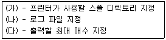
- sd-lf-mc
- sp-lf-mx
- sd-lg-mc
- sp-lg-mx
(정답률: 19%)
42. 다음 중 리눅스 커널이 설치되는 위치는 어디인가?
- /usr/src/linux
- /usr/bin/linux
- /src/linux
- /var/src/linux
(정답률: 38%)
43. 커널 모듈(Kernel Module)에 대한 설명으로 옳지 못한 것은?
- 커널의 크기를 최소화 할 수 있다.
- 새로운 커널 코드를 재부팅 하지 않고서 테스트할 수 있다.
- 효율성과 메모리 운영에 있어서 성능 향상을 기대할 수 있다.
- 잘못된 모듈은 시스템에 손상을 줄 가능성이 있다.
(정답률: 14%)
44. 시스템 관리자 홍길동은 새로 교체한 비디오 카드에서 지원하는 프레임 버퍼 기능을 사용하려고 한다. 이를 위한 가장 적절한 조치는?
- 시스템을 재부팅 한 후, XF86config 유틸리티를 이용하여 X 설정을 다시 한다.
- 커널이 프레임 버퍼 기능을 지원하도록 컴파일하고, XF86config 유틸리티를 이용하여 X 설정을 다시 한다.
- XF86config 유틸리티로 X 설정을 다시 한 후, Run Level을 5로 조정한다.
- 윈도우용 드라이버를 리눅스에 설치한 후, XF86config 유틸리티로 X 설정을 다시 한다.
(정답률: 43%)
45. SCSI(Small Computer System Interface)에 대한 설명으로 옳지 못한 것은?
- IRQ 번호만 각각 지정해 주면, SCSI-I/II 와 Fast SCSI는 7개, Wide SCSI는 14개 까지 주변기기를 연결할 수 있다.
- IBM 호환기종을 포함한 다양한 플렛폼에서 사용할 수 있다.
- SCSI 장치를 제어하는 기능은 주변장치 자체에 들어있어서 호스트 어댑터를 통해 PC와 직접 통신할 수 있다.
- SCSI 하드디스크의 경우 IDE와 는 다른 채널 방식으로 , 디스크 여러 곳에서 동시에 액세스하여도 속도 저하가 크게 일어나지 않는다.
(정답률: 0%)
46. 새로 설치한 하드디스크를 사용하기 위해 반드시 필요한 명령어가 아닌 것은?
- mount
- mkfs
- fsck
- fdisk
(정답률: 48%)
47. 프린터 제어와 관련된 명령어가 아닌 것은?
- printtool
- printconf-gui
- spooler
- lpr
(정답률: 32%)
48. 사운드 출력을 위한 기본적인 장치명은?
- /dev/aux
- /dev/dsp
- /dev/snd
- /dev/sda
(정답률: 8%)
49. module.conf 파일 안에 설정될 내용으로 옳지 못한 것은?
- alias usb-controller usb-uhci
- alias sound-slot-0 sb
- alias 3c59x eth0
- alias parport_lowlevel parport_pc
(정답률: 37%)
50. 다음 중 마우스 설정과 가장 관계가 적은 것은?
- /usr/sbin/mouseconfig
- /etc/X11/XF86Config-4
- /etc/sysconfig/mouse
- /sbin/service
(정답률: 64%)
51. 운영체제에서 보내주는 실시간 로그가 기록되는 message 파일이 일반적으로 저장되는 위치는?
- /usr/log
- /dev/log
- /var/log
- /log
(정답률: 73%)
52. syslog 데몬에 대한 설명으로 틀린 것은?
- 시스템 로그 관리 데몬이다.
- 시스템 로그를 이용하여 특정 사용자로부터의 시스템 접근을 막을 때 이용한다.
- service syslog start 명령으로 데몬을 실행시킬 수 있다.
- sendmail로 발송된 전자 우편에 대한 로그를 관리할 수 있다.
(정답률: 25%)
53. 시스템 부팅 시 sendmail 데몬의 실행여부에 대한 기록을 볼 수 있는 로그파일은?
- message
- boot.log
- squid
- maillog
(정답률: 27%)
54. secure 로그 파일에 대한 설명으로 알맞지 않은 것은?
- Telnet을 이용한 원격지 접속자의 정보가 기록된다.
- 가장 관계가 밀접한 데몬은 xinetd(inetd)이다.
- 웹서버 접속자에 대한 서비스 내용이 기록된다.
- 관리자가 서버 시스템에 접속하는 사용자들의 현황을 파악할 수 있는 좋은 자료가 된다.
(정답률: 45%)
55. 파일 및 파일 시스템을 보호하기 위해 취할 수 있는 방법으로 적절하지 못한 것은?
- 사용자의 파일 생성 umask를 제한된 값으로 조절한다.
- 보호되어야 할 파일을 위해서 특수비트인 변경불가비트(Immutable Bit)를 사용한다.
- 사용자 홈 디렉토리에 SUID/SGID를 사용하지 않도록 한다.
- 일반사용자가 자신의 권한을 바꿀 수 있도록 설정한다.
(정답률: 69%)
56. 시스템 보안과 관련된 프로그램이 아닌 것은?
- pam
- sudo
- dpkg
- cops
(정답률: 50%)
57. IPChains에 대한 설명으로 틀린 것은?
- 커널 2.2.x 이상에서만 사용 가능하다.
- 리눅스 시스템을 통과하는 패킷을 제어할 수 있다.
- 원활한 작동을 위해서는 IPTable과 병행 되어야 한다.
- TCP, UDP 포트 등으로의 연결에 대한 접속 허용 여부를 설정할 수 있다.
(정답률: 25%)
58. 백업 장치로 적당하지 않은 것은?
- 광 스토리지
- 백업 테이프
- DVD-ROM
- 대용량 하드디스크
(정답률: 56%)
59. 다음 중 성격이 다른 명령어는?
- taper
- ssh
- dump
- rdist
(정답률: 68%)
60. rdist의 기능과 관련이 없는 것은?
- 클러스터링 시스템에서 각 노드의 저장 장치 내용을 동일하게 유지하는 기능
- 복수 시스템들 간의 파일동기화 기능
- 복수 시스템들 간의 변경된 파일 만 동기화 하는 기능
- 복수 시스템들 간의 프로세스 동기화 기능
(정답률: 40%)
3과목: 네트워크 및 서비스의 활용
61. 동적인 웹 서비스를 위해 사용하는 스크립트 언어인 PHP에 대한 설명으로 틀린 것은?
- 다양한 데이터베이스와 연동이 가능하다.
- Windows의 ASP와 같은 역할을 한다.
- Windows 계열의 운영체제에서는 사용이 불가능하다.
- 속도, 개발 편의성, 여러 가지 확장 기능이 뛰어나다
(정답률: 50%)
62. 아파치 환경 설정 파일인 httpd.conf에서 아래의 설정이 뜻하는 것으로 옳은 것은?
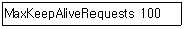
- 한번의 GET 요청에 대한 타임아웃 시간을 정해주는 부분으로, 클라이언트가 요청한 정보를 받을 때까지 소요되는 대기시간의 최대 값을 뜻한다.
- 접속한 클라이언트의 요청을 처리한 후연결을 유지하고 있는 시간으로, 다음 요청에 대한 시간을 절약할 수 있다.
- 하나의 지속적인 접속 동안 허용할 최대 요청 횟수를 지정하는 것이다.
- 동일한 접속 상태에서 동일한 클라이언트로부터의 다음 요청을 기다리는 시간으로, 지정된 시간동안 요청을 하지 않으면 접속을 끊는다.
(정답률: 37%)
63. 다음은 CGI가 동작하는 과정을 순서 없이 나열한 것이다. 순서대로 올바르게 나열된 것을 고르시오.
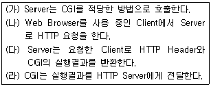
- (나)-(라)-(가)-(다)
- (나)-(가)-(라)-(다)
- (가)-(라)-(나)-(다)
- (가)-(나)-(라)-(다)
(정답률: 56%)
64. 다음 중 SSL에 대한 설명으로 틀린 것은?
- 마이크로소프트사에 의해 최초로 개발되었다.
- 서버와 클라이언트 사이에서의 인증과 암호화된 통신을 위하여, 웹에서 일반적으로 사용되고 있다.
- SSL 프로토콜은 HTTP나 IMAP과 같은 상위 레벨의 프로토콜과 TCP/IP층 사이에서 작동된다.
- 서버의 인증서와 공개 ID를 체크하기 위하여 공개키 암호화의 표준 기술을 사용한다.
(정답률: 39%)
65. 하나의 IP 주소로 운영하는 아파치 웹 서버에 여러개의 도메인을 가지고 각각의 홈페이지를 운영하고자 한다. 이 때 필요한 작업이 아닌 것은?
- NameVirtualHost 지시자에 사용하고자 하는 IP 주소를 설정한다.
- <VirtualHost> ... </VirtualHost> 컨테이너 안의 ServerName 지시자에 도메인을 설정한다.
- Listen 지시자에 홈페이지에서 사용할 도메인을 모두 설정한다.
- 하나의 홈 페이지에 두 개 이상의 도메인을 이용하여 접속하기 위해서는 ServerAlias 지시자를 사용한다.
(정답률: 43%)
66. 인터넷과 웹의 핵심에는 TCP/IP, HTTP 등의 공개 프로토콜이 자리 잡고 있다. 일반적으로 공개 프로토콜이란, 사용하거나 구현하는데 있어 전혀 비용이 들지 않는 완전한 명세를 공개적으로 구할 수 있는 프로토콜임을 의미 한다. 다음 중 이러한 공개 프로토콜의 장점에 대한 설명으로 옳지 못한 것은?
- 일반적으로 폐쇄 프로토콜에 비해 확산 속도가 빠르다.
- 공개 프로토콜을 사용하는 소프트웨어는 해당 프로토콜을 사용하는 비용을 부담하지 않아도 된다.
- 폐쇄 프로토콜에 비해 최종 사용자에게 더 많은 이익을 가져다 줄 수 있다.
- 집중화된 제어로 인해 호환되지 않는 다른 프로토콜들로 나뉘어 지는 것을 막을 수 있다.
(정답률: 16%)
67. 아파치 웹 서버에서 CGI를 사용하려고 한다. 이와 관련된 설명으로 옳지 못한 것은?
- CGI를 사용한다는 것은 웹 서버에서 준비한 프로그램을 실행하여 그 결과를 동적으로 사용자의 브라우저에 보여줌을 뜻한다.
- 확장자가 cgi 로 끝나는 스크립트를 CGI 형태로 인식시키기 위해서는 설정파일에 [AddHandlercgi-script.cgi]와 같은 설정이 필요하다.
- CGI 프로그램을 저장할 디렉토리를 지정하기 위해서는 설정파일에 [ScriptAlias /cgi-bin/ /usr/local/apache/cgi-bin ]와 같은 설정이 필요하다.
- CGI를 사용하는 디렉토리에 대하여 설정파일의 해당 디렉토리 컨테이너에 [Options RunCGI]와 같은 설정이 필요하다.
(정답률: 35%)
68. 웹 서버의 성능을 최적화하기 위한 방법으로서 가장 적절하지 못한 것은?
- 가능한 모든 페이지를 정적인 HTML 보다 동적으로 구성되는 컨텐츠로 통합하여 서비스한다.
- 아파치 웹 서버의 경우 ServerType 지시자를 standalone으로 설정한다.
- 웹 서버에서 DNS 역검색을 수행하지 않도록 설정한다.
- TCP 재전송 중단 시간을 늘린다.
(정답률: 8%)
69. Apache 1.3과 PHP 3.2를 사용하여 운영해오던 웹 서버에서 PHP를 4.1로 업그레이드 한 후, 이전 버전에서는 문제가 없던 <form>문을 통한 변수를 받아오지 못하고 있다. 이에 대한 해결책으로 알맞은 것은?
- PHP를 재설치한다
- php.ini에서 safe_mode를 off한다
- php.ini에서 register_globals를 on한다
- php.ini에서 enable_dl을 on한다
(정답률: 42%)
70. ProFTPd 설정 파일에서 FTP 서버에 접속한 사용자가 자신의 홈 디렉토리를 벗어나지 못하도록 하려고 할 때 사용하는 지시자는?
- DefaultServer
- DocumentRoot
- DefaultRoot
- FakeRoot
(정답률: 44%)
71. 다음 중 일반적으로 FTP 관련 로그가 저장되는 파일은?
- /var/log/xferlog
- /var/log/messages
- /var/log/secure
- /var/log/dmesg
(정답률: 40%)
72. ProFTPd 설정 파일에서 쓰이는 지시자와 이에 대한 설명으로 적절하지 못한 것은?
- ServerType : FTP 서버를 standalone 방식으로 운영할 것인지, inetd 방식으로 운영할 것인지를 지정한다.
- RequireValidShell : FTP 서버에 접속 시 사용할 쉘(Shell)을 지정한다.
- TimeoutIdle : 접속 대기시간을 설정하는것으로, 접속 후 지정한 시간이상 아무런 동작이 없으면 접속을 종료시킨다.
- DisplayLogin : 사용자가 FTP 서버에 로그인 시 보여줄 메시지를 저장하는 파일을 지정한다.
(정답률: 30%)
73. 삼바(Samba)에 대한 설명으로 가장 적절하지 못한 것은?
- smbd 데몬은 사용자 인증과 파일 및 프린터 공유를 담당하는 데몬이다.
- nmbd 데몬은 WINS(Windows Internet Name Service)를 담당하는 데몬으로, 컴퓨터 이름과 IP 주소를 연결시킨다.
- 삼바 서버는 동시에 WINS 서버가 될 수 없다.
- SWAT은 웹을 기반으로 한 삼바 설정 도구로서, 웹 브라우저를 통해 설정할 수 있도록 편리한 입력폼을 제공한다.
(정답률: 64%)
74. NetBIOS(Network Basic Input/Output System)에 대한 설명으로 옳지 못한 것은?
- IBM에 의해 개발되었다.
- 자체적으로는 라우팅이 불가능하다.
- OSI 모델에 기술되어 있는 트렌스포트 및 세션 계층의 서비스를 제공한다.
- 일반적으로 NFS 서비스에서 이용된다.
(정답률: 6%)
75. 삼바의 네 가지 보안 모델에 속하지 않는 것은?
- 사용자 레벨 보안 정책
- 공유 레벨 보안 정책
- 서버 레벨 보안 정책
- 디스크 레벨 보안 정책
(정답률: 63%)
76. NFS 에 대한 설명으로 올바른 것은?
- 모든 리눅스 시스템은 NFS 서버와 NFS 클라이언트로 동시에 운영될 수 있다.
- NFS 서버에서 NFS 클라이언트의 파일 시스템을 마운트하여 사용한다.
- 파일 시스템의 일부를 공유하기 위해서는 /etc/nfs.conf 파일에 등록해야 한다.
- 일반적으로 NFS의 설정이 변경되더라도 NFS 데몬을 재시작(restart) 하거나 설정 파일을 다시 읽을(reload) 필요는 없다.
(정답률: 25%)
77. 원격 NFS 서버인 ihd의 특정 디렉토리를 마운트 하기 위한 /etc/fstab 파일의 설정으로 알맞은 것은?
- /ihd/proc /mnt/ihd nfs defaults 0 0
- ihd:/home /mnt/ihd nfs defaults 0 0
- /mnt/ihd ihd:/tmp nfs defaults 0 0
- /home:ihd /mnt/ihd nfs defaults 0 0
(정답률: 60%)
78. NFS 유틸리티와 이에 대한 설명으로 옳지 못한 것은?
- showmount : NFS 마운트 정보를 보여준다.
- nfsstat : NFS 서버와 클라이언트의 상태를 보여준다.
- nfsstart : NFS 서비스를 시작한다.
- nhfsstone : NFS의 성능을 벤치마크 한다.
(정답률: 17%)
79. SMTP(Simple Mail Transfer Protocol)에 대한 설명으로 적절하지 못한 것은?
- TCP/IP 응용계층 프로토콜의 하나이다.
- 아직까지는 텍스트 문서만 전송이 가능하고, 그림이나 소리는 메시지에 포함시킬 수 없다.
- 인터넷에서 전자우편 기능을 실현하는 프로토콜로 사용된다.
- 일반적으로 25번 포트를 사용한다.
(정답률: 72%)
80. Sendmail의 Virtual Host 설정에 대한 설명으로 옳지 못한 것은?
- virtusertable 파일은 편집 후 makemap 명령을 이용하여 변경사항을 갱신하여야 한다.
- virtusertable 파일을 이용하여 가상 사용자를 설정할 수 있다.
- 특정 이메일 주소로 전달되는 전자 우편을 원하는 다른 이메일 주소로 포워딩할 수도 있다.
- 하나의 계정에 대하여 서로 다른 이메일 주소를 중복해서 만들 수 없다.
(정답률: 48%)
81. 다음은 sendmail의 access 설정 파일의 내용 중 일부이다. 이에 대한 설명으로 옳지 못한 것은?
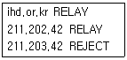
- 211.202.42.X의 IP 주소를 가진 시스템의 메일 중계를 허용하고 있다.
- 211.203.42.X의 IP 주소를 가진 시스템의 메일 중계를 거부하고 있다.
- access 파일에는 IP 주소만 기입해야 하므로 ihd.or.kr 부분은 잘못된 설정이다.
- 위와 같이 access 파일을 편집하였다면 반드시 makemap 명령을 이용하여 변경된 내용을 갱신하여야 한다.
(정답률: 56%)
82. 다음의 프로그램 중 성격이 가장 다른 하나는?
- mutt
- pine
- Eudora
- procmail
(정답률: 65%)
83. sendmail의 alias 기능에 대한 설명으로 틀린 것은?
- 사용자들에게 정상 이메일 주소 이외에 다른 이름을 부여해줄 수 있다.
- 메일링 리스트를 작성할 수 있다.
- 수신된 메일 메시지와 이를 처리하는 외부 프로그램을 연계시켜줄 수 있다.
- 특정 호스트로부터 보내진 메일을 거부할 수 있다.
(정답률: 37%)
84. 운영하고 있는 메일서버의 이름은 mail.ihd.or.kr 이지만, 수신측에서 발신지를 ihd.or.kr로 받게 하고자 할 때 사용되는 sendmail.cf 파일의 설정은?
- Dj$ihd.or.kr
- DMihd.or.kr
- Cwihd.or.kr
- Fwihd.or.kr
(정답률: 0%)
85. 시스템 관리자 홍길동은 자신이 관리하는 리눅스 시스템의 모든 사용자들에게 메일을 보내고자, Sendmail의 메일 Alias 설정 파일에 alluser: :include:/etc/mail/allusers 라고 설정 한 후 해당 정보를 갱신시켰다. 다음 중 위에 언급된 /etc/mail/allusers 파일을 만들기 위한 가장 적절한 명령은?
- cat /etc/passwd > /etc/mail/allusers
- awk -F: '$3 > 100 { print $1 }' /etc/passwd > /etc/mail/allusers
- sed '$1 > 200 { print $1 }' /etc/passwd > /etc/mail/allusers
- makemap hash /etc/mail/allusers < /etc/passwd
(정답률: 0%)
86. 정상적인 전자우편 서비스를 위하여 필요한 프로그램으로 가장 적절하게 짝지어진 것은?
- Qmail + procmail
- sendmail + Qmail
- procmail + POP3
- sendmail + IMAP
(정답률: 57%)
87. 메일서버 관리자인 홍길동은 특정 계정으로 전송되는 메일을 모두 다른 곳으로 전달하려고 한다. 이를 위해 이용할 수 있는 파일이 아닌 것은?
- access 설정 파일
- $HOME/.forward 파일
- procmailrc 파일
- alias 설정 파일
(정답률: 7%)
88. squid 설정 파일인 /etc/squid 파일의 내용 중 maximum_object_size 지시자가 뜻하는 것은?
- 프락시 서버에서 사용할 포트 번호를 지정해 주는 것으로서, 기본값은 3128 이다.
- 프락시 서버에서 사용할 캐쉬 크기를 지정해 주는 것으로서, 기본값은 8M이다.
- 캐시 디스크에 저장할 수 있는 파일의 크기를 지정해 주는 것으로서, 기본값은 4M이다.
- 디스크에 저장될 캐쉬 크기와 로그파일을 지정해 주는 부분이다.
(정답률: 34%)
89. NIS 서비스의 설정 순서로 알맞은 것은?
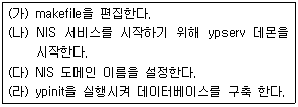
- (가)-(나)-(다)-(라)
- (나)-(가)-(라)-(다)
- (다)-(나)-(가)-(라)
- (라)-(다)-(나)-(가)
(정답률: 28%)
90. 다음은 DHCP 동작과정을 순서 없이 나열한 것이다. 순서대로 올바르게 나열된 것을 고르시오.
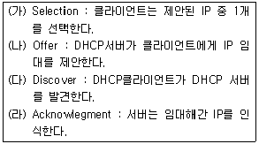
- (가)-(나)-(다)-(라)
- (나)-(라)-(가)-(다)
- (다)-(나)-(가)-(라)
- (가)-(라)-(나)-(다)
(정답률: 57%)
91. 클라이언트에서 IP 주소를 도메인 네임으로 변환시키는 리졸버(resolver)가 이를 수행하는 방법으로 가장 적절하지 못한 것은?
- /etc/hosts 파일 이용
- NIS 서비스 이용
- DNS 서비스 이용
- Samba 서비스 이용
(정답률: 53%)
92. DHCP(Dynamic Host Configuration Protocol)의 설정 파일인 dhcpd.conf의 지시자들에 대한 설명으로 틀린 것은?
- subnet-mask : 클라이언트에게 할당 할 서브넷 마스크를 지정한다.
- host : DHCP 서버의 IP 주소를 지정한다.
- range : 할당할 수 있는 IP 주소 영역을 지정한다.
- max-lease-time : 클라이언트가 할당받은 IP 주소를 가지고 있을 수 있는 최대시간을 지정한다.
(정답률: 25%)
93. DHCP 클라이언트에서 DHCP 서버로부터 IP 주소를 요청하는 프로그램은?
- bootp
- dhcpd
- ifconfig
- pump
(정답률: 5%)
94. DNS 서버에서 루트 네임서버에 대한 정보를 가지고 있는 데이터베이스 파일은?
- named.conf
- named.ca
- named.local
- forward.db
(정답률: 12%)
95. 사내 사용자들의 웹 응답 시간을 단축시키기 위하여 사용하는 서비스는?
- BIND
- Webmin
- Proxy
- NIS
(정답률: 55%)
96. DoS(Denial of Service) 공격에 대한 대응 방안으로 적절하지 못한 것은?
- 사용자 패스워드에 대한 철저한 보안 유지
- 패치 프로그램이나 최신 프로그램의 이용
- 라우터나 방화벽을 이용한 패킷 필터링
- 관리자의 DoS 공격에 대한 지속적이고 깊은 관심
(정답률: 46%)
97. IDS(Intrusion Detection System, 침입 탐지 시스템)의 필요성과 가장 거리가 먼 것은?
- 방화벽에 의해 걸러지지 않는 외부의 위험한 해킹행위가 내부 네트워크에서 발생하고 있다고 판단될 때
- 침입 차단 시스템이 효과적인 차단에 실패하였을 경우, 이에 적절히 대응할 수 있는 보안 솔루션이 필요하다고 판단될 때
- 동시사용자의 폭주로 방화벽을 일시적으로 중지시키는 경우가 잦아질 때
- 침입 차단 시스템을 구축하기 어려운 환경이라고 판단 될 때
(정답률: 50%)
98. 다음의 보안 권고문에 대한 설명으로 가장 올바르지 못한 것은?
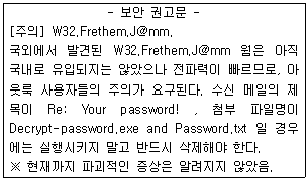
- W32.Frethem.J@mm은 웜(Worm)으로서 시스템에 해를 끼칠 수 있는 장소에 자기 자신을 위치시키는 바이러스나 복제 코드의 일종으로 볼 수 있다.
- W32.Frethem.J@mm은 메일로 전파된다는 것을 알 수 있다.
- 메일 서버를 사용하는 시스템에서의 방화벽은 W32.Frethem.J@mm의 경우 큰 효용성을 기대하기 어려울 것 같다는 예상을 할 수 있다.
- 위의 글로 미루어보아 W32.Frethem.J@mm은 공격 패턴으로 볼 때 DoS(Denial of Service)방식으로 이해할 수 있다.
(정답률: 40%)
99. iptables를 이용하여 외부 인터페이스인 ppp0 로부터 들어오는 telnet 접근을 차단하기 위한 명령으로 옳은 것은?
- iptables -A INPUT -p tcp --destination-port telnet -i ppp0 -j DROP
- iptables -L INPUT -p tcp -dp telnet --interfaces ppp0 -j REJECT
- iptables --direction INPUT --protocol tcp --destination-port telnet --interfaces ppp0 --jump DROP
- iptables --input telnet --output DROP
(정답률: 45%)
100. 하나의 공인 IP 주소를 이용하여 네트워크 내부의 모든 사용자들이 인터넷을 사용할 수 있고, 외부로부터의 불법적인 접근도 차단 시킬 수 있는 기법을 무엇이라고 하는가?
- IP 매스커레이딩(IP Masquerading)
- 스니핑(Sniffing)
- DMZ(De-Militarized Zone)
- IDS(Intrusion Detection System)
(정답률: 72%)